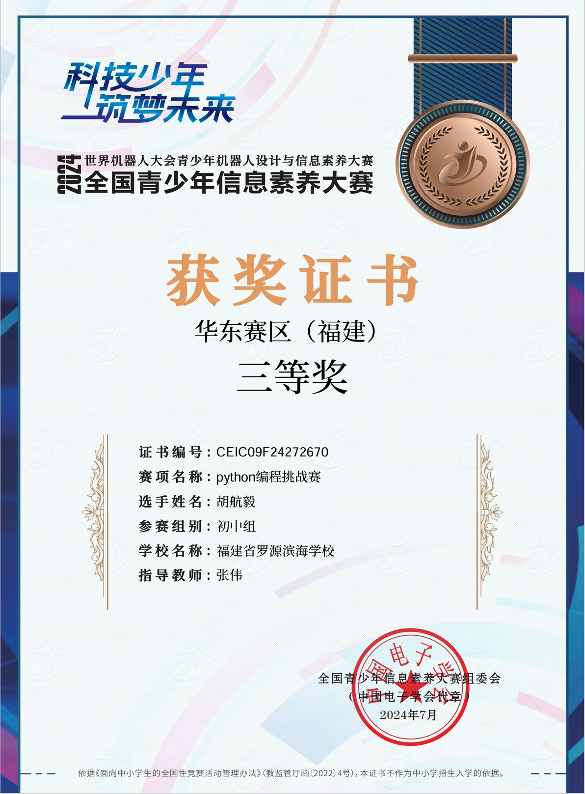
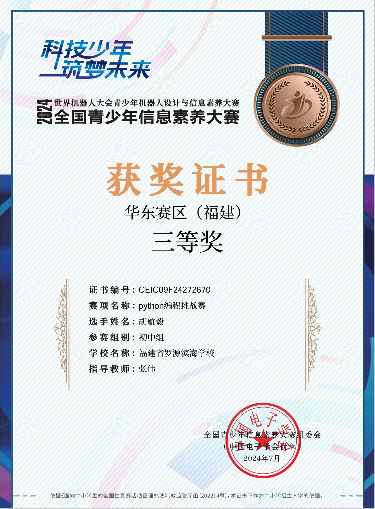

个人信息
姓名：胡航毅
班级：407
个人技能：电脑技能非常比较熟练，会写C/C++、Python、html、css代码，PS不会目前不会,可以后面去学、视频剪辑会一点
一些编程比赛的获奖证书

 

意向部门
通过个人技能就可以看出来了我肯定选信息部，虽然不会目前不会PS，但我可以去学啊，而且弄信息化宣传不能只有图片编辑，我觉的也可以搞网页宣传更能体现我们信息部的技术。
在知道学生会有信息部后我和我朋友第一个想到的就是搞一个我们学生会自己的网站，要知道在福州内有自己学生会官网的学校可不多，虽然这也挺费钱的，不过也希望我们的学生会能够给我一个平台去锻炼自己、展示自己。